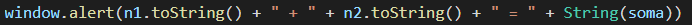
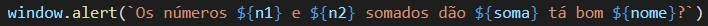
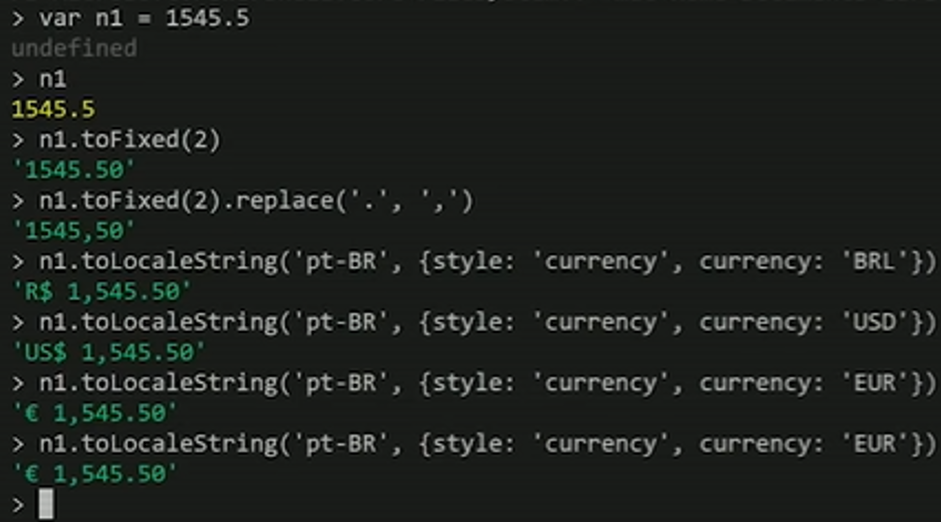

Manipulação de dados com JavaScript
Conversões de tipos
As conversões de tipos são constantemente necessárias durante a produção de um algoritmo, veja alguns dos modos de conversão de tipos entre números e strings.
Number.parseInt(n) → Conversão de strings para números inteiros.
Number.parseFloat(n) → Conversão de strings para número reais.
Number(n) → onversão automática do JavaScript.
Essas funções acima são posicionadas antes do nosso prompt, com isso, antes do dado ser jogado na variável a conversão será feita, tanto o parseInt quando parseFloat funciona dessa forma. Por fim, temos o funcionamento do Number posicionado antes do promtp também, essa forma pode ser problemática em alguns casos, pois é a própria linguagem que determina qual é aquele tipo de dados, o convertendo, mas no nosso caso funcionou da maneira correta.
String(n) → Conversão de número para strings.
n.String() → Conversão de número para strings.
a conversão contrária, ou seja, de números para strings, apesar de não ter sido necessária no exemplo dado, apresentamos acima essas conversões.
Formatações de strings
Além dos comandos apresentados abaixo, também existem as formas de se juntar texto e valores armazenados em uma variável. A primeira delas é a concatenação. Veja:
A segunda delas é a template string, que faz uso do placeholder (${}), o mesmo deve ser sempre limitado por crase. Veja:
s.lenght → devolve o número de caracteres que a variável s possui.
s.toUpperCase() → devolve a variável s escrita toda em letras maiúsculas.
s.toLowerCase() → devolve a variável s escrita toda em letras minúsculas.
document.write() → escreve na página HTML.
Formatações de números
Tais formatações que serão apresentadas abaixo não foram úteis para este exercício, portanto, as mesmas foram testadas através do nodejS. Veja:
n.toFixed(2) → n sendo uma variável, a função fixa o número de casas decimais
de n em duas.
n.toFixed(2).replace('.', ',') → faz a mesma coisa de antes e troca o ponto por
vírgula nos dígitos decimais.
n.toLocaleString('pt-BR', {style: 'currency', currency: 'BRL'}) → indica em qual
moeda está sendo indicado esse valor.